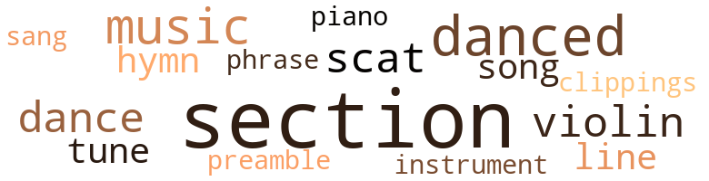
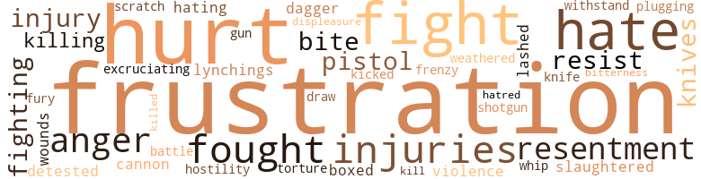
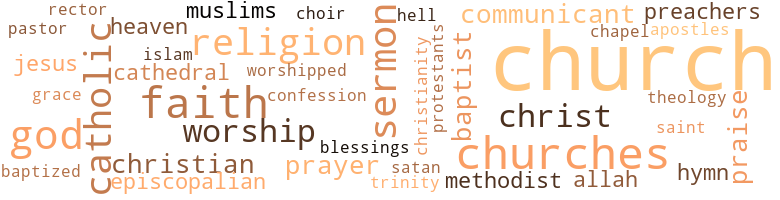

West to the Ohio River, by Beason, Mattie (1976)
46 music-related terms matched in this text.
Most frequent terms in this topic: section (14); danced (5); music (4); dance (3); violin (3)
clipping.n.01
Definition: an excerpt cut from a newspaper or magazine
| word | sentence |
|---|---|
| clippings | He had some rose clippings and was ready to talk again about Henry . |
dance.n.01
Definition: an artistic form of nonverbal communication
| word | sentence |
|---|---|
| dance | We were at a dance . |
| dance | She met him at a school dance in September and she has seen him several times since . |
| dance | When I met you at the dance you were n't like that at all . |
dance.v.03
Definition: skip, leap, or move up and down or sideways
| word | sentence |
|---|---|
| danced | I danced with Ruby and my two friends danced with the other girls , for hours-and until early morning , in fact , we danced to the tune of jazzy music . |
| danced | I danced with Ruby and my two friends danced with the other girls , for hours-and until early morning , in fact , we danced to the tune of jazzy music . |
| danced | I danced with Ruby and my two friends danced with the other girls , for hours-and until early morning , in fact , we danced to the tune of jazzy music . |
| danced | We danced until the blood ran hot in our veins . |
| danced | The eyes danced in his head . |
hymn.n.01
Definition: a song of praise (to God or to a saint or to a nation)
| word | sentence |
|---|---|
| hymn | The opening hymn : In Christ there is no East or West In him no South or North But one great fellowship of love Throughout the whole wide earth . |
| hymn | That opening hymn , " In Christ there is no East or West , In Him no South or North , " still resounds in my memory . |
music.n.01
Definition: an artistic form of auditory communication incorporating instrumental or vocal tones in a structured and continuous manner
| word | sentence |
|---|---|
| music | I danced with Ruby and my two friends danced with the other girls , for hours-and until early morning , in fact , we danced to the tune of jazzy music . |
| music | You know my interest in music . |
| music | It could have been the music , or maybe a motherly instinct . |
| music | you do have a good background in music . |
musical_instrument.n.01
Definition: any of various devices or contrivances that can be used to produce musical tones or sounds
| word | sentence |
|---|---|
| instrument | Sister Charlotte Anne insisted she had to have the instrument for a musical concert and the later flight would not get it there in time . |
phrase.n.02
Definition: a short musical passage
| word | sentence |
|---|---|
| phrase | They are not familiar with hospitals and the routine and they could not phrase an appropriate question . |
piano.n.01
Definition: a keyboard instrument that is played by depressing keys that cause hammers to strike tuned strings and produce sounds
| word | sentence |
|---|---|
| piano | My old upright piano is in there too . |
preamble.n.01
Definition: a preliminary introduction to a statute or constitution (usually explaining its purpose)
| word | sentence |
|---|---|
| Preamble | People running and moving about , in search of peace and freedom , those precious components outlined in the Preamble of the Constitution of the United States . |
scat.n.01
Definition: singing jazz; the singer substitutes nonsense syllables for the words of the song and tries to sound like a musical instrument
| word | sentence |
|---|---|
| scats | The guide said , " The front scats were used by the masters , and the rear ones were used by the slaves . " |
| scat | Christmas will be here before I can say scat . |
| scat | I motioned to her to come in and have a scat in a chair in the corner of the room and out of view of the others . |
section.n.01
Definition: a self-contained part of a larger composition (written or musical)
| word | sentence |
|---|---|
| section | Jo-Jo is a neighborhood dog that appeared from nowhere , but seems to watch over all the children in the section , particularly the boys . |
| section | She reads incessantly , a cross section of books , so it 's hard to place any particular interest . |
| section | " That 's in the section called the Point , you know , " she added . |
| section | Sherrill was quivering as she turned and said , " Mrs. Sullivan , your section is on for overflow intake today and Miss Reed 's name is next . |
| section | It 's a beautiful section of the country , and when I was there a year ago the weather was much like it was here yesterday . |
| section | This was a section I had usually visited in the spring . |
| section | I just wanted to see you and some of the other people I once worked with in this section . |
| section | Her influence was widely felt , and this section of the city mourned . |
| section | Most were in this section of the city in the early days . |
| section | The case is in the section of which I am the supervisor . |
| section | Do n't believe I have ever seen you walking in this section before , " he said . |
| section | It 's a section to view again , even for me . |
| section | " Are n't there many vacant lots over in your section and scattered about in this area with weeds and grass growing taller than you in summer ? " |
| section | The central Black section moved farther west and the White western population moved east . |
sing.v.02
Definition: produce tones with the voice
| word | sentence |
|---|---|
| sang | The choir was full on Sunday morning and they sang with feeling . |
song.n.01
Definition: a short musical composition with words
| word | sentence |
|---|---|
| songs | Their songs of praise and hope roared like bubbling water over a rocky cliff . |
| song | Some , in glittering vehicles of many colors , sizes and makes , raise their voices in song of praise and worship , for a couple of hours . |
tune.n.01
Definition: a succession of notes forming a distinctive sequence
| word | sentence |
|---|---|
| line | A long line merged from the lower level . |
| tune | I danced with Ruby and my two friends danced with the other girls , for hours-and until early morning , in fact , we danced to the tune of jazzy music . |
| tune | For the first time , I knew what my mother felt when she hummed the same tune countless times , years past . |
| line | The great throngs of people rushing and standing in line for tickets , the long shiny black trains with their enormous engines puffing and blowing smoke miles into the skies , are no longer there . |
violin.n.01
Definition: bowed stringed instrument that is the highest member of the violin family; this instrument has four strings and a hollow body and an unfretted fingerboard and is played with a bow
| word | sentence |
|---|---|
| violin | As she drew nearer the object was recognized as a bass violin . |
| violin | The violin was behind the counter awaiting its fate-to go or remain . |
| violin | The bass violin was the first piece of luggage I saw on the arrival in Haiti . |
87 violence-related terms matched in this text.
Most frequent terms in this topic: hurt (8); fight (6); hate (5); frustrations (5); injuries (4)
abrasion.n.01
Definition: an abraded area where the skin is torn or worn off
| word | sentence |
|---|---|
| scratch | Mr. McGuire was slightly injured but his truck got not a scratch . |
anger.n.01
Definition: a strong emotion; a feeling that is oriented toward some real or supposed grievance
| word | sentence |
|---|---|
| anger | What could induce such intense anger as to force her from her home , with stringy hair against that sallow white complexion and children clad so thinly , into the crisp air of this fall day , I wondered to myself . |
| anger | From that point forward the questions were still sharp and full of anger , but Mr. Logan 's response had a more soothing effect . |
| anger | Not all who spoke did so in anger . |
battle.v.01
Definition: battle or contend against in or as if in a battle
| word | sentence |
|---|---|
| battle | One ca n't battle that traffic that fast . |
box.v.03
Definition: engage in a boxing match
| word | sentence |
|---|---|
| boxed | As many times before , most had bundled lip , tied up , boxed up and shuffled out of town and from the farms . |
butcher.v.01
Definition: kill (animals) usually for food consumption
| word | sentence |
|---|---|
| slaughtered | in a way , being slaughtered . |
cannon.n.04
Definition: heavy automatic gun fired from an airplane
| word | sentence |
|---|---|
| cannon | It is a quiet town and no signs were up except a large cannon resting in the middle of a green lawn . |
craze.n.02
Definition: state of violent mental agitation
| word | sentence |
|---|---|
| frenzy | During the frenzy I wondered : " What kind of woman is this Sister Charlotte Anne ? |
dagger.n.01
Definition: a short knife with a pointed blade used for piercing or stabbing
| word | sentence |
|---|---|
| dagger | A dagger thrown directly through my heart could hardly have been more painful as I told him , " Mr. Ellery , we are sorry that we ca n't help you except for transportation back home . " |
defy.v.01
Definition: resist or confront with resistance
| word | sentence |
|---|---|
| withstand | It was not only a chance to get a good education but , equally important , a chance for their children to zero in on the kind of Christian attitudes they were certain would enable them to withstand many of the undesirable tides flooding the land today . |
displeasure.n.01
Definition: the feeling of being displeased or annoyed or dissatisfied with someone or something
| word | sentence |
|---|---|
| displeasure | Her eyes actually sparkle with joy as she moves her hands about indicating pleasure or displeasure with one thing or another . |
draw.v.23
Definition: pull (a person) apart with four horses tied to his extremities, so as to execute him
| word | sentence |
|---|---|
| draw | Our objective is to draw people rather than drive them away . |
fight.n.05
Definition: a boxing or wrestling match
| word | sentence |
|---|---|
| fight | The students and parents had put up a gallant fight to save it , but the odds were too great . |
| fight | It was widely aired , and there was a long court fight . |
fight.v.02
Definition: fight against or resist strongly
| word | sentence |
|---|---|
| fought | Looking back now at the east wall , my eyes fell on a pew formerly used by Zoe Compton , who successfully fought the legal battle for the equalization of Black-White teacher 's pay . |
| fighting | Only Sallie had the added burden of fighting back tears over her inability to persuade Paul Hudson , her husband , to accompany her . |
| fighting | If one could be sure that Henry and I have been fighting through our own feelings about our early experiences with church , the battle would be half won . |
| fought | Quinton and I fought and quarreled and I told him I was gon na leave him and I did n't want him no more . ' |
| fight | A renewed faith in the rightness of the government - local and national and an emerging desire to work and contribute to the country 's growth and willingness to fight to protect its interest . |
| fought | For hours I fought the idea of attempting to secure an address . |
| fought | The more I fought it the faster and more powerful it became . |
| fight | " You must fight , " said a voice . |
| fight | But how can I fight against his great strength ? |
| fight | Had all the women in that group been observant and clever enough to interpret the echoes and resolved to fight , they might have had their men . |
frustration.n.03
Definition: a feeling of annoyance at being hindered or criticized
| word | sentence |
|---|---|
| Frustrations | Frustrations abound in this office . |
| frustration | Soul : In the process of achieving the end results his personal frustration yoked with the frustrations of a Black people for the last hundred years - the lynchings the mob violence , the cheatings , the disowned children everywhere will loom so large in his mind as to render him impotent in his intimate relations . |
| frustrations | Soul : In the process of achieving the end results his personal frustration yoked with the frustrations of a Black people for the last hundred years - the lynchings the mob violence , the cheatings , the disowned children everywhere will loom so large in his mind as to render him impotent in his intimate relations . |
| frustrations | You , my friend , have the advantage of going out daily to a job and , though you may stagger under the frustrations of what seem to be problems of an unsurmountable nature , it is this very change that helps you . |
| frustrations | This was the basis of their frustrations . |
| frustrations | All the frustrations they had caused her , but she never gave up trying . |
| Frustrations | Frustrations take many strange courses . |
| frustration | What about frustration ? |
| frustrations | Might we hope for eased frustrations and re-harnessed energies for the vineyard of hope and lasting joy . |
fury.n.01
Definition: a feeling of intense anger
| word | sentence |
|---|---|
| fury | The discussion grew to such a pitch that it 's possible the agent decided it was better that the ship crash than the fury continue . |
gun.n.01
Definition: a weapon that discharges a missile at high velocity (especially from a metal tube or barrel)
| word | sentence |
|---|---|
| gun | " I wish I had my gun . |
hate.n.01
Definition: the emotion of intense dislike; a feeling of dislike so strong that it demands action
| word | sentence |
|---|---|
| hate | I think that 's justifiable hate . |
| hate | As I talked to myself my tortured soul , saturated with hate , resentment and love loomed larger and larger . |
| hatred | The summation of all that 's happened for years back can not avoid acridity , fear , hatred and protest . |
hate.v.01
Definition: dislike intensely; feel antipathy or aversion towards
| word | sentence |
|---|---|
| hating | Time lost in hating makes it impossible to do that . |
| hate | I hate it . |
| detested | Henry , when younger , had walked those same roads and he detested the memory of those early days in Bluefield . |
| hate | " Do tell me how I. a Black man , in the clutches of a Caucasian , could feel free to eat the food prepared by one who has been taught to hate so deeply : or to share other confidences with her ? |
| hate | If an earthly father continues to heap impossible burdens on his children , the children will come to hate him . |
hostility.n.01
Definition: a hostile (very unfriendly) disposition
| word | sentence |
|---|---|
| hostility | In the atmosphere of such hostility , few , any place , could have done better . |
hurt.v.04
Definition: cause damage or affect negatively
| word | sentence |
|---|---|
| hurt | but so hurt the tears would not come . |
injury.n.01
Definition: any physical damage to the body caused by violence or accident or fracture etc.
| word | sentence |
|---|---|
| injury | Mis injury had not rendered him impotent . |
| hurt | The hurt seemed deeper in the students whom she had disciplined most severely . |
| hurt | There was no indication of hurt , exept in the color of the face that alternately blushed white and red . |
| injuries | Henry 's right leg was broken and ( here were serious internal injuries . |
| injuries | The extent of the internal injuries is not yet known and may not be for a time . |
| injury | The knowledge of his injury did not seem to dampen her spirit . |
| injuries | Accidental injuries ? |
| injuries | Hut injuries like that inflicted on the Governor of Alabama May 15 stun the vision of all . |
| hurt | Your hurt is deep , and loss considerable , but bitterness you have been spared . |
kick_back.v.02
Definition: spring back, as from a forceful thrust
| word | sentence |
|---|---|
| kicked | I got in the car and it kicked off , like new . |
kill.v.10
Definition: cause the death of, without intention
| word | sentence |
|---|---|
| kill | But the cry to " kill the pigs . " |
| killed | Can all or should all be killed ? |
killing.n.01
Definition: an event that causes someone to die
| word | sentence |
|---|---|
| killings | The killings at Olympic Village - a great waste of human life . |
killing.n.02
Definition: the act of terminating a life
| word | sentence |
|---|---|
| killing | The Muslims , led by Elijah Muhammad , the Messenger of Allah , do not embrace the concept of killing . |
knife.n.02
Definition: a weapon with a handle and blade with a sharp point
| word | sentence |
|---|---|
| knife | A boy of fifteen , Anthony German , stabbed Janies Crane , also fifteen , with a pocket knife and the boy is now at General Hospital and not expected to live . |
| knives | There are rumors of the hoys walking the halls with knives and clubs and everything . |
| knives | Two had pistols , four had pocket knives , two had switch-blades and the others had clubs . |
lynching.n.01
Definition: putting a person to death by mob action without due process of law
| word | sentence |
|---|---|
| lynchings | Soul : In the process of achieving the end results his personal frustration yoked with the frustrations of a Black people for the last hundred years - the lynchings the mob violence , the cheatings , the disowned children everywhere will loom so large in his mind as to render him impotent in his intimate relations . |
pain.v.02
Definition: cause emotional anguish or make miserable
| word | sentence |
|---|---|
| hurt | I was furious and hurt as I reflected what once was and now is . |
| hurt | It hurt me to see him like that . |
| hurt | It will hurt you for it wounds me deeply . |
| hurt | Not wanting to hurt me and at the same time leaning that way . |
pistol.n.01
Definition: a firearm that is held and fired with one hand
| word | sentence |
|---|---|
| pistol | I went back to my room and there it was over on the floor where he had thrown it - just opposite the pistol he had used . |
| pistols | Two had pistols , four had pocket knives , two had switch-blades and the others had clubs . |
punch.v.01
Definition: deliver a quick blow to
| word | sentence |
|---|---|
| Plugging | Plugging loop-holes , increasing taxes for those who could afford to pay , spending less money on war , expanding the economy with the view of providing jobs for all able bodied people . |
resentment.n.01
Definition: a feeling of deep and bitter anger and ill-will
| word | sentence |
|---|---|
| resentment | As I talked to myself my tortured soul , saturated with hate , resentment and love loomed larger and larger . |
| resentment | My flight might have been interpreted as resentment of her surroundings , which she could not help . |
| resentment | It was difficult to assess whether or not the objection was , really , the improper use of the funds , or the national head , where the idea originated , or the resentment of a Black man who had emerged to head a department on the national level . |
| bitterness | Your hurt is deep , and loss considerable , but bitterness you have been spared . |
resist.v.04
Definition: withstand the force of something
| word | sentence |
|---|---|
| resist | I could not resist him that night , nor all the nights for a couple of years later . |
| resist | But I can and must resist him . " |
shotgun.n.01
Definition: firearm that is a double-barreled smoothbore shoulder weapon for firing shot at short ranges
| word | sentence |
|---|---|
| shotgun | Then at the end of the month we get a double barrel shotgun load of it right in the face - low production . " |
sting.n.03
Definition: a painful wound caused by the thrust of an insect's stinger into skin
| word | sentence |
|---|---|
| bite | A bite or so of something he will finally manage to swallow without breaking his gaze across the yard and on into the distance . |
| bite | The emcee , who presided so well , absorbed all the bite and gall directed at him . |
torment.v.01
Definition: torment emotionally or mentally
| word | sentence |
|---|---|
| excruciating | One excruciating thought hounded me . |
| torture | This is sheer torture . |
violence.n.01
Definition: an act of aggression (as one against a person who resists)
| word | sentence |
|---|---|
| violence | Soul : In the process of achieving the end results his personal frustration yoked with the frustrations of a Black people for the last hundred years - the lynchings the mob violence , the cheatings , the disowned children everywhere will loom so large in his mind as to render him impotent in his intimate relations . |
weather.v.01
Definition: face and withstand with courage
| word | sentence |
|---|---|
| weathered | He weathered the storm well , but his collar was flattened in the process and his shirt dripping with water , from perspiration . |
whip.v.04
Definition: strike as if by whipping
| word | sentence |
|---|---|
| lashed | Last evening the news commentator talked much about the storm , " Agnes , " as it swirled out of the Caribbean and lashed the Eastern Seaboard . |
worst.v.01
Definition: defeat thoroughly
| word | sentence |
|---|---|
| whip | If you do I 'll whip you , you hear me ? ' |
wound.n.01
Definition: an injury to living tissue (especially an injury involving a cut or break in the skin)
| word | sentence |
|---|---|
| wounds | It will hurt you for it wounds me deeply . |
196 religion-related terms matched in this text.
Most frequent terms in this topic: church (42); Church (41); faith (9); God (8); churches (8)
allah.n.01
Definition: Muslim name for the one and only God
| word | sentence |
|---|---|
| Allah | The Muslims , led by Elijah Muhammad , the Messenger of Allah , do not embrace the concept of killing . |
| Allah | The Messenger of Allah proposes a land of all Blacks , within a land in order to develop without influences or interference of others . |
apostle.n.03
Definition: (New Testament) one of the original 12 disciples chosen by Christ to preach his gospel
| word | sentence |
|---|---|
| apostles | The excitement of the empty tomb , the hustle and bustle of the apostles when they heard . |
baptist.n.01
Definition: follower of Baptistic doctrines
| word | sentence |
|---|---|
| Baptist | Daniel Graftow and Marvin Love , both thirteen , are Baptist , and Felix Cross , age twelve , is a Methodist . |
| Baptist | Rev. Heston , a Baptist minister and a friend of Henry 's did an appropriate eulogy . |
| Baptist | My , I must not omit Greater Salem Baptist with its immense congregation . |
baptize.v.01
Definition: administer baptism to
| word | sentence |
|---|---|
| baptized | There are children to be baptized ; youth to be taught in Sunday Schools , young people to be married . |
blessing.n.05
Definition: the act of praying for divine protection
| word | sentence |
|---|---|
| blessings | Mother and Dad could help some but to marry without their blessings would preclude this chance . |
cathedral.n.02
Definition: the principal Christian church building of a bishop's diocese
| word | sentence |
|---|---|
| cathedral | You know , some of the ladies had been as far as the cathedral on Second Street but few , if any , had ever ventured this far west . |
| cathedral | A plenary session with the women of the diocese at the cathedral . |
catholic.n.01
Definition: a member of a Catholic church
| word | sentence |
|---|---|
| Catholics | Raymond Soon , age twelve , and Charley Moore , age twelve , are also Catholics . |
| Catholics | As objectionable as all churches are - the Catholics are more so ; even more than your Church , the Episcopal . |
| Catholics | Why , Martha , Catholics nearly live in church . |
| Catholics | Catholics make great preparation for Christmas , you know . |
| Catholics | Carol , Catholics and Protestants alike . |
| Catholic | Henry is in Mt. Sinai , a Catholic hospital , and Nellie will be going to a Catholic clinic for the first time , but I do n't believe in the Catholic religion or any form of organized religion . |
| Catholics | They are devout Catholics . |
chapel.n.01
Definition: a place of worship that has its own altar
| word | sentence |
|---|---|
| Chapel | Riding the distance of five miles to William 's Chapel Church , with the family , in the surrey drawn by two slick , reddish-brown horses , was usually pleasant to all but me . |
choir.n.03
Definition: the area occupied by singers; the part of the chancel between sanctuary and nave
| word | sentence |
|---|---|
| choir | On the opposite side a bunch filed through the choir room , and from the sidewalks a group came in . |
christendom.n.01
Definition: the collective body of Christians throughout the world and history (found predominantly in Europe and the Americas and Australia)
| word | sentence |
|---|---|
| Christianity | We could do as well with smaller ones , and there would be just as much Christianity in them , " he said . |
christian.n.01
Definition: a religious person who believes Jesus is the Christ and who is a member of a Christian denomination
| word | sentence |
|---|---|
| Christians | Something like St. Paul , on the road to Damascus ; only Father , I am not persecuting Christians . |
| Christians | That is , Christians according to my lights . |
| Christian | There stands the Young Women 's Christian Association-the West End Branch . |
church.n.02
Definition: a place for public (especially Christian) worship
| word | sentence |
|---|---|
| church | The century-old church still stands majestically . |
| church | Lunch finished and I. as always , had to see the church . |
| church | I am beginning to think that the mounting trouble in the church and in the world stems from that source . |
| church | " Robert is weak and ca n't do much lifting but he likes to go to church . |
| church | I was chosen president because I did not belong to a church and all felt I would be fair . |
| church | Mother , I have been to church with Robert several times to watch him serve and I like it-and Father Crutcher . |
| church | For as long as you have known me , you know I have had no appreciation for church membership . |
| church | I did not like school and wanted to drop out but nothing was so irritating as the show for church on Sunday . |
| churches | As objectionable as all churches are - the Catholics are more so ; even more than your Church , the Episcopal . |
| church | If one could be sure that Henry and I have been fighting through our own feelings about our early experiences with church , the battle would be half won . |
| church | It must be more than the frequency of church attendance . |
| church | Why , Martha , Catholics nearly live in church . |
| church | Your awareness of the time I spent at St. Augustine and other church related schools sort of built up an expectation of a never changing person . |
| church | Let 's go back to your father , James Law , and see him again driving his family along the dusty roads in Green County in the surrey to church each Sunday as you say . |
| church | It may seem stupid , and I doubt many church people in the city even know there are Rogation Days . |
| church | Should it be a church like Big Bethel or St. Mary 's , " I will go where it leads " was my vow then , and now . |
| church | " Do you attend church , Johnetta ? " |
| church | I shall use it for much frolic and fun , since considerably less time will be spent in church this year . |
| church | For the first time , this year no plans are being made in this family for church attendance . |
| church | You know , Carol , I believe it might be better for all of us to have a church connection . |
| church | " I have not talked church to Melba . |
| church | Do n't think she would object to church , but I am not certain of the Catholic Church . |
| church | As has been my habit for so long , even though I no longer attend church , I was reading a passage of Scripture . |
| church | It was a boarding school - a church supported school . |
| church | Do you go to church , Seldon ? " |
| church | Here we are , your church and mine and the other four . |
| church | Why not go to church and suggest it ? |
| church | Should he of value in the institutional church today . |
| church | These are valid reasons for church membership . |
| church | With the idea of teaching church structure ? |
| church | I do not share your mother 's great love for church but somehow I just wanted to get out . |
| church | The feet , they would not even accommodate shoes for church the next day . |
| church | I do not insist that she or Timothy go to Sunday school or church ever . |
| church | All the time that people , you for instance , spend in church , the money given , the work done , surely this world would be better if there were anything to it . |
| church | It is one of the major events for my church 's celebration of its one hundredth birthday . |
church.n.04
Definition: the body of people who attend or belong to a particular local church
| word | sentence |
|---|---|
| Church | The most significant happening to date was the eighty-eighth Annual Convention of the Episcopal Church Women of the hundred and fifty-year-old Diocese of Kentucky , that convened here May 16 and 17 . |
| Church | Plainly in view now was a picture of the people who have long been gone , and an account of the contributions they made to the Church and to the community . |
| Church | named for him still stands , lie got strength from his Church and he returned strength . |
| Church | At one stands you and the Church with its so-called profound teachings , and at the other stands a prop for Anne , supported by the push , shoves and jostl-ings of the in-crowd . |
| Church | But , remember , you do not make the institution of the Church . |
| Church | Bruton Parish Church , 1710-15 , is most rare . |
| Church | The program at the Church of Our Merciful Saviour - you were in a musical selection . |
| church | It is true that our church is in great turmoil today . |
| Church | Some of us , as ministers , are so torn that we can not exercise the great authority the Church gives us . |
| Church | And this so near the Catholic Church , St. Michael 's , in which I have least interest . |
| church | All the while the little hideaway , the little church possessed me . |
| church | We always agreed that we would not force church on our children . |
| Church | trending the dusty highways to the Ebenezer Baptist Church on Sunday with the four younger of the seven children trekking beside her , often comes to mind . |
| Church | Church morning , noon and night . |
| Church | It is true I have talked with you many times of religion and the Church as an institution for good in our society . |
| Church | Sincerely , Carol Hudson Louisville , March 30 , 1972 My dear Father Simpson , We are stirring , here at the Church of Our Merciful Saviour . |
| Church | For as long as I could recall we had been going each Sunday and other days of obligation to St. Mary 's Mission Church at Junction City , Tennessee , fhe Church was near that town - not in the city . |
| Church | For as long as I could recall we had been going each Sunday and other days of obligation to St. Mary 's Mission Church at Junction City , Tennessee , fhe Church was near that town - not in the city . |
| Church | And more frequently , now that I was older , I was spending more weekends with my maternal uncle and aunt , Rev. Frederick and Clara Miller , he was the pastor of Big Bethel Church , Church of the Holy Scripture at Clayton , North Carolina , not too far from Junction City . |
| Church | The Church provided the house and car and paid the phone bills in addition to large gifts on birthdays and anniversaries . |
| Church | Walnut Street is a main thoroughfare , and the Church is surrounded by public and private low income apartments . |
| Church | Those who belong think the Church has much to offer . |
| churches | They are churches of six different persuasions : Greater Salem Baptist , Quinn Chapel A.M.E. , Brown Memorial C.M.E. , Our Merciful Savior , Episcopal , Saint Augustine , Catholic , Broadway Temple , A.M.E. Zion . |
| Church | For the last six years , I had wanted to see the Church in action in that part of the world . |
| Church | Henry had visited his Church a few times but never became affiliated . |
| church | My school was different , a church school , you know . |
| Church | We did share a common concern for the Church . |
| Church | I 've followed the Church 's way and that does n't get it . |
| Church | I am only trying to say that there has been a great shift in emphasis in the Church and it leaves me wondering . |
| church | There is nothing to all this infidelity that church people talk about . |
| Church | I have definitely decided to pull out of the Church and go it on my own . |
| Church | Love always , M. S. Indianapolis , December 16 , 1972 My dear Mrs. Sullivan , At this moment , I have confused thoughts about you , myself and the whole Church . |
| Church | Yes , you go through these formalized rituals as we have taught you , and as the Church lias taught me . |
| churches | There were many things I might say in a sermon to my present congregation and to people in other churches I have served . |
| Church | I thought of the numerous talks and arguments going on in the Church about divorce , abortions and dope but somehow none of it fit here . |
| Church | Let 's all go to the Catholic Church . |
| Church | Do n't think she would object to church , but I am not certain of the Catholic Church . |
| Church | Too many for the Methodist Church , founded by her father , many years ago . |
| Church | There they waited their turn to join the procession which originated at the mortuary two squares west and made its way toward the Church two squares east of the School . |
| Church | It was the result of a fund established at the General Convention of the Episcopal Church in 1967 to assist minorities in their struggle to attain a greater share of freedom and full manhood . |
| Church | My eyes turn left towards Quinn Chapel , slightly over two squares to Broadway Temple , and St. Augustine - the Roman Church , directly in front and used by Blacks . |
| Church | Turning more to the right there is the AME Methodist Church and the Episcopal Church of Our Merciful Saviour directly ahead . |
| Church | Turning more to the right there is the AME Methodist Church and the Episcopal Church of Our Merciful Saviour directly ahead . |
| Church | The Diocesan Episcopal Church Women met there in their annual conclave . |
| churches | " Seldon , I was just thinking about these six churches , all within a radius of four square blocks . |
| church | " Do you belong to church ? " he asked , looking me directly in the eye as if he might expect any answer short of the truth . |
| churches | But churches just turn me off . |
| churches | Maybe the real impetus came from some of the churches in Celestial Square . |
| churches | On an elevation there I can see three major churches : West Chestnut Street Baptist on the corner facing south , Asbury Methodist on the opposite corner , and Zion Baptist four squares away at Twenty-second and Walnut Streets . |
| Churches | Together with the Churches in Celestial Square , a real impact might be made on poverty . |
| Churches | One may be fairly certain that most of these Churches have some kind of program for helping the sick and shut-insol their congregations and may give some baskets at Christmas to the poor . |
| Church | It was before I came to Merciful Saviour - at the Church in Nashville , my first . |
| Church | One Sunday , a special Sunday - it must have been a first Sunday , that being the day of the largest attendance - the small Church was full . |
| Church | So I ran around the corner to a small Baptist Church and I have just returned . |
| Churches | No one thought of the Churches moving , but eventually those lighthouses crumbled and vanished . |
| churches | Except for the Black churches , scarcely any are left now . |
| church | I may not have the faith in your kind of God and surely no church is often graced by my presence , but I have a sense of balance that may be good , even for you . |
| Church | The eighty-eighth Annual Convention of the Episcopal Church Women to convene at Merciful Saviour for the first time in the hundred-fifty-year history of the diocese . |
church_service.n.01
Definition: a service conducted in a house of worship
| word | sentence |
|---|---|
| church | We meet , now , on Sunday , immediately after church services . |
communicant.n.01
Definition: a person entitled to receive Communion
| word | sentence |
|---|---|
| communicants | I had forgotten the many things initiated and completed by former communicants of this parish . |
| communicant | The communicant strength has diminished through death and other means . |
| communicants | I was thinking that I would check the records to see if her parents were ever communicants here . |
confession.n.05
Definition: the document that spells out the belief system of a given church (especially the Reformation churches of the 16th century)
| word | sentence |
|---|---|
| confession | Well Martha , this seemingly true confession is with me now . |
curate.n.01
Definition: a person authorized to conduct religious worship
| word | sentence |
|---|---|
| rector | Father Simpson , our rector at the time , was impressed , too . |
| pastor | And more frequently , now that I was older , I was spending more weekends with my maternal uncle and aunt , Rev. Frederick and Clara Miller , he was the pastor of Big Bethel Church , Church of the Holy Scripture at Clayton , North Carolina , not too far from Junction City . |
eden.n.01
Definition: any place of complete bliss and delight and peace
| word | sentence |
|---|---|
| heaven | But for heaven 's sake , Girl , the kind of world we live in seems to require some unchallenged truth to sustain us . |
| heaven | Matthew 18 : 1-2 : " Who is the greatest in the kingdom of heaven ? |
episcopalian.n.01
Definition: a member of the Episcopal church
| word | sentence |
|---|---|
| Episcopalians | How did they happen to be Episcopalians anyway . |
| Episcopalian | Then I recalled my father telling me that some big land owner had been an Episcopalian at least in name and some of the servants had felt it was the only thing to be . |
god.n.03
Definition: a man of such superior qualities that he seems like a deity to other people
| word | sentence |
|---|---|
| God | God bless you and your family , Martha Cincinnati , July 6 , 1972 Hello Martha , You can always " put me on , " and then make amends for something you have said . |
| God | Herbert Gray said , in his " Men Women and God , " a perfect sex act can only take place in a married relationship . |
| God | Let 's take the thing you call the Trinity - that three persons in one and the characteristic is love , he is a personal God and involved in the lives of men I have heard from you and others many times . |
| God | " Let 's hope that God and Jo-Jo will keep him safe tonight , " I thought . |
| gods | So , why in the name of whatever gods there may be , do n't you loosen up and be yourself ? |
| God | Tell Tim to forgive me , and I hope to God you will too , I love you , Carol . |
| God | It was a spiritual she was humming , " Wading the waters , wading the waters children , God 's gon na trouble the waters . " |
| God | I may not have the faith in your kind of God and surely no church is often graced by my presence , but I have a sense of balance that may be good , even for you . |
| God | I pray too , not to your God but to a great spirit somewhere out there above the universe that may hear me . |
grace.n.05
Definition: (Greek mythology) one of three sisters who were the givers of beauty and charm; a favorite subject for sculptors
| word | sentence |
|---|---|
| Grace | She ran downstairs and out the door , maybe to my sister Grace 's , five doors away . |
hell.n.01
Definition: any place of pain and turmoil
| word | sentence |
|---|---|
| hell | " Well he was here again yesterday , " Liz continued , " to unleash a ton of hell in this office . |
hymn.n.01
Definition: a song of praise (to God or to a saint or to a nation)
| word | sentence |
|---|---|
| hymn | The opening hymn : In Christ there is no East or West In him no South or North But one great fellowship of love Throughout the whole wide earth . |
| hymn | That opening hymn , " In Christ there is no East or West , In Him no South or North , " still resounds in my memory . |
islam.n.01
Definition: the civilization of Muslims collectively which is governed by the Muslim religion
| word | sentence |
|---|---|
| Islam | It was this environment that produced Malcolm X. Recall , he was once a " minister of Islam . " |
jesus.n.01
Definition: a teacher and prophet born in Bethlehem and active in Nazareth; his life and sermons form the basis for Christianity (circa 4 BC - AD 29)
| word | sentence |
|---|---|
| Jesus | St. Matthew 1:18 : " Now the birth of Jesus Christ was on this wise . . . " Mrs. Eliza Games ( often called Liz ) , came in to get some records left on the table from the previous day . |
| Jesus | And Jesus called a little child unto him , and set him in the midst of them . " |
messiah.n.01
Definition: any expected deliverer
| word | sentence |
|---|---|
| Christ | The opening hymn : In Christ there is no East or West In him no South or North But one great fellowship of love Throughout the whole wide earth . |
| Christ | We only need a simple test : " Does it glorify Christ ? " |
| Christ | St. Matthew 1:18 : " Now the birth of Jesus Christ was on this wise . . . " Mrs. Eliza Games ( often called Liz ) , came in to get some records left on the table from the previous day . |
| Christ | That opening hymn , " In Christ there is no East or West , In Him no South or North , " still resounds in my memory . |
| Christ | Is it that we are not in Christ ? |
methodist.n.01
Definition: a follower of Wesleyanism as practiced by the Methodist Church
| word | sentence |
|---|---|
| Methodist | Daniel Graftow and Marvin Love , both thirteen , are Baptist , and Felix Cross , age twelve , is a Methodist . |
| Methodist | Her friend is a Methodist . " |
muslim.n.01
Definition: a believer in or follower of Islam
| word | sentence |
|---|---|
| Muslims | Leaders of other movements , such as the Muslims and the Malcolm X movement , have taken different directions . |
| Muslims | The Muslims , led by Elijah Muhammad , the Messenger of Allah , do not embrace the concept of killing . |
praise.n.02
Definition: offering words of homage as an act of worship
| word | sentence |
|---|---|
| praise | Their songs of praise and hope roared like bubbling water over a rocky cliff . |
| praise | Some , in glittering vehicles of many colors , sizes and makes , raise their voices in song of praise and worship , for a couple of hours . |
| praise | The only value they knew and recognized was comfort for their flabby bodies , weakened from hags of excess fat , a pat on the shoulder , and praise for the thousands of dollars contributed to a cause to keep people on their knees . |
prayer.n.01
Definition: the act of communicating with a deity (especially as a petition or in adoration or contrition or thanksgiving)
| word | sentence |
|---|---|
| prayer | Then the Blacks had their own prayer bands slipping from house to house or hut to hut , but they loved each other and stuck together . |
| prayers | Frankly , if one returned in a couple of months there would be evidence that some great power heard those prayers . |
| prayer | I have said a daily prayer for him . |
preacher.n.01
Definition: someone whose occupation is preaching the gospel
| word | sentence |
|---|---|
| preachers | I am not used to preachers calling on me , certainly not Catholic priests . |
| preachers | On the other hand I ca n't see preachers or ministers having no concern for the unemployed , poor living conditions , heavy drinking - even dope addiction . |
protestant.n.01
Definition: an adherent of Protestantism
| word | sentence |
|---|---|
| Protestants | Carol , Catholics and Protestants alike . |
religion.n.01
Definition: a strong belief in a supernatural power or powers that control human destiny
| word | sentence |
|---|---|
| faith | I am acutely aware of your total disregard for my kind of faith . |
| religion | When I am calmer , I think it might be well to encourage a family discussion on a wide area of subjects such as religion , school , marriage , etc . |
| faith | Regardless of your opinion , you of unshakable faith and steadfastness , do write me . |
| religion | It is true I have talked with you many times of religion and the Church as an institution for good in our society . |
| religion | We ca n't say religion as we perceive it touched their lives , but a trust and belief they must have had . |
| faith | There is much I ca n't understand in settling down to a steady faith . |
| faith | A personal faith , you always say . |
| faith | It is supportive to feel that there are people , and especially friends , with steadfast faith . |
| faith | In your struggle there is growth - a strengthening of faith . |
| faith | May I assure you of my great interest and , at the same time , my complete faith that you will come through this in fine shape . |
| Faith | " Yes , the Apostolic Faith , near Shively . |
| faith | A renewed faith in the rightness of the government - local and national and an emerging desire to work and contribute to the country 's growth and willingness to fight to protect its interest . |
| religion | I am so disgusted and fed up with all the religion and religious overtones that I could scream . |
| religion | That religion is ingrained in her from years back and I think it would take " all of the king 's horses " to change her . |
| faith | I may not have the faith in your kind of God and surely no church is often graced by my presence , but I have a sense of balance that may be good , even for you . |
| religion | Henry is in Mt. Sinai , a Catholic hospital , and Nellie will be going to a Catholic clinic for the first time , but I do n't believe in the Catholic religion or any form of organized religion . |
| religion | Henry is in Mt. Sinai , a Catholic hospital , and Nellie will be going to a Catholic clinic for the first time , but I do n't believe in the Catholic religion or any form of organized religion . |
saint.n.02
Definition: person of exceptional holiness
| word | sentence |
|---|---|
| Saint | They are churches of six different persuasions : Greater Salem Baptist , Quinn Chapel A.M.E. , Brown Memorial C.M.E. , Our Merciful Savior , Episcopal , Saint Augustine , Catholic , Broadway Temple , A.M.E. Zion . |
satan.n.01
Definition: (Judeo-Christian and Islamic religions) chief spirit of evil and adversary of God; tempter of mankind; master of Hell
| word | sentence |
|---|---|
| Satan | " Get ye behind me Satan . " |
sermon.n.02
Definition: a moralistic rebuke
| word | sentence |
|---|---|
| sermons | I 've tried preaching the elegant sermons , for which I was once highly esteemed . |
| sermons | The sermons ! |
| sermon | There were many things I might say in a sermon to my present congregation and to people in other churches I have served . |
| sermon | In the beginning , I imitated my father , reading the service with a simple down-to-earth type of sermon . |
| sermon | When it came to the sermon I assumed an oratorical eloquence - a mixture of oratory with metaphors splashed in between . |
| sermon | This was the same sermon I had preached before , except for a little extra dressing . |
| sermon | One Sunday the oratory type of sermon , and the next the real down-to-earth type of sermon . |
| sermon | One Sunday the oratory type of sermon , and the next the real down-to-earth type of sermon . |
theology.n.02
Definition: a particular system or school of religious beliefs and teachings
| word | sentence |
|---|---|
| theology | You have more experience than I and with your knowledge of theology you will understand . |
trinity.n.02
Definition: the union of the Father and Son and Holy Ghost in one Godhead
| word | sentence |
|---|---|
| Trinity | On Palm Sunday I worshipped in Holy Trinity Cathedral , Port-Au-Prince , Haiti . |
worship.n.01
Definition: the activity of worshipping
| word | sentence |
|---|---|
| worship | That was meaningful worship . |
| worship | Some , in glittering vehicles of many colors , sizes and makes , raise their voices in song of praise and worship , for a couple of hours . |
| worship | So many of our leaders have and do worship here . |
| worship | The right of a group of people to worship as they choose is conceded . |
worship.n.02
Definition: a feeling of profound love and admiration
| word | sentence |
|---|---|
| worship | It 's the hero worship age , the kind he extends his father . |
worship.v.02
Definition: show devotion to (a deity)
| word | sentence |
|---|---|
| worshipped | On Palm Sunday I worshipped in Holy Trinity Cathedral , Port-Au-Prince , Haiti . |